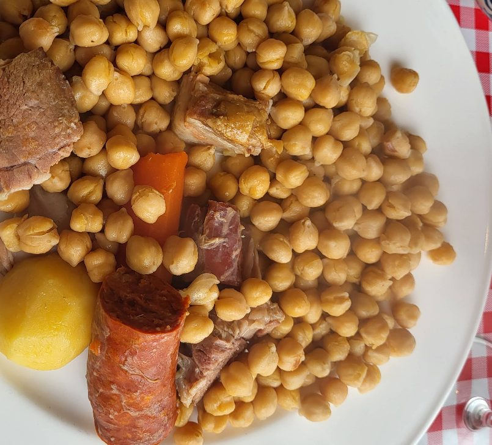

Receta familiar en puchero de barro, cocinada a fuego lento. Tradición, historia y cultura en cada plato.
Reservar mesaCocina casera y generosa, hecha a fuego lento.

En puchero de barro, con ingredientes frescos y cuidadosamente seleccionados. Empieza con su sopa de cocido.
Para compartir entre dos, con patatas y pimientos. También en versión cecina y queso de cabrales.
Tostas, tortilla de patata y buen café. Los combinados incluyen café.
En 1945, Don Teófilo Moraleda Fernández fundó una humilde casa de comidas en Torrelaguna. Su hijo y su nieto continuaron la pasión por el cocido en puchero de barro, y hoy esa receta llega a Ciudad Lineal para invitar a la tertulia lenta, serena y amable de los viejos castellanos.
“Uno de los mejores cocidos del año. Ración muy generosa y muy buena relación calidad-precio.”
“Auténtica comida casera. El personal, súper amable: estuvimos como en casa.”
Local pequeño y acogedor: te recomendamos reservar, sobre todo para el cocido.